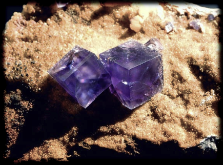

تُشكل الذرات في البنية البلورية ترتيبات موقعية منتظمة جداً. وهي ترتبط إرتباطاً وثيقاً برياضيات تبليط متعدد المقام وتعبئة الكرات.
يوضح البرنامج على اليمين عدة حالات نموذجية لمثل هذه الترتيبات. بالنقر على مكعب صغير أو مجسم ثماني السطوح، يمكن أن نرى كيف تتناسب هذه البنيات مع البنية المتناظرة في البلورات المنتظمة.
|
 |
تشكل بلورة الفلوريت بنيات تكعيبية منتظمة جداً.